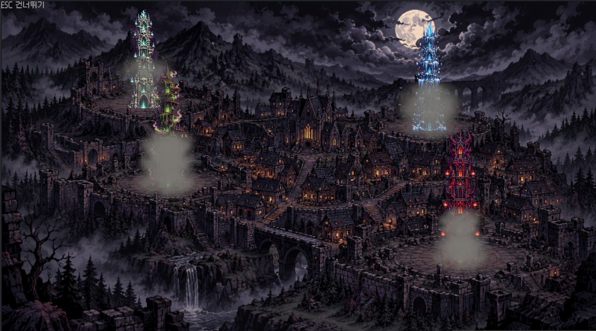
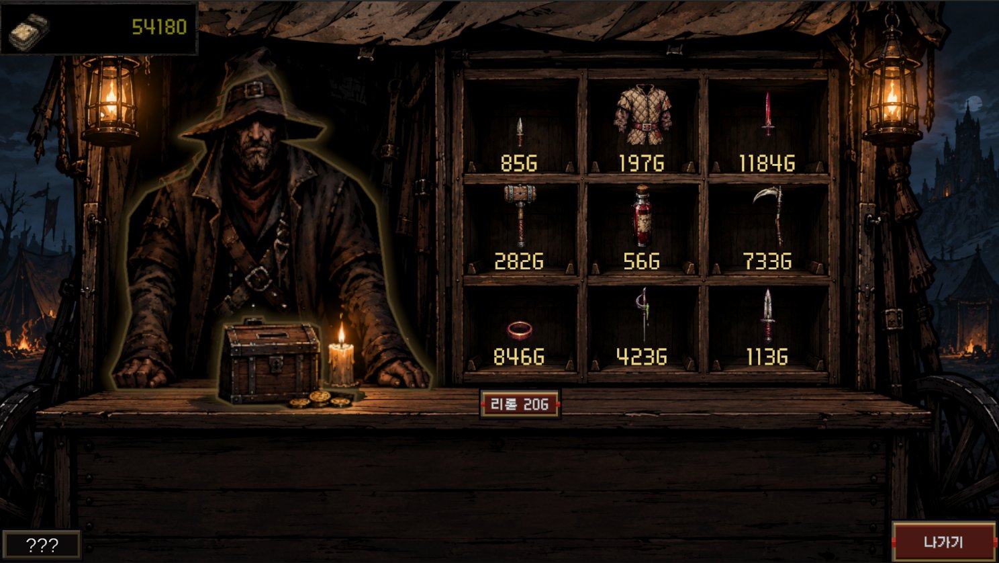
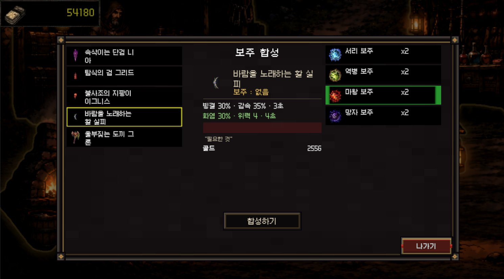
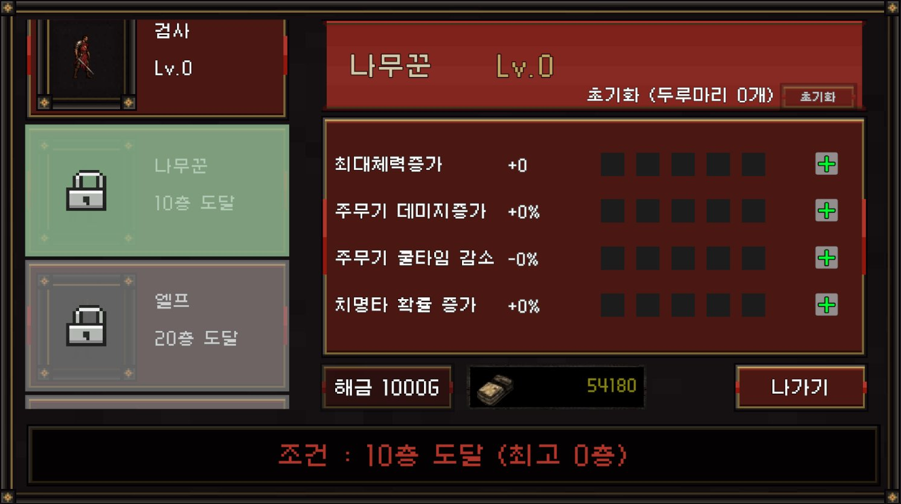
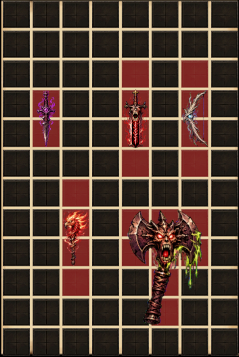

Packbound
가방에 무엇을, 어떻게 넣느냐가 곧 전투력이 되는
개발 1인 개발 (기획 · 프로그래밍 · 데이터 밸런스)
환경 Unity 6000.3.17f1 · C# · Visual Studio 2022 · Git
규모 C# 스크립트 약 260개 · 직업 5종 · 무기 40여 종 · 축복 70여 종
상태 STOVE 출시 준비 중
GitHub github.com/namgang98/LastProject
담당 역할 전체 설계와 구현. 데이터 파이프라인, 격자 인벤토리, 자동 전투, 강화·보주, 세이브, 튜토리얼
게임 소개
마을에서 장비를 사고 강화해 가방에 배치한 뒤 탑에 오릅니다. 전투는 자동이며, 가방 안 아이템이 각자의 쿨타임마다 공격·회복·방어를 실행합니다. 그래서 어떤 아이템을 어떤 모양으로 가방에 넣을지 가 플레이의 핵심입니다.
마을상점·강화·훈련
→
가방 배치격자 퍼즐
→
탑 등반쿨타임 자동 전투
→
5층마다 축복매 판 다른 빌드
→
귀환재료로 영구 성장
직업·탑 선택 
탑 붕괴 컷씬 (클리어한 탑 연출)

상점 (리롤, 우호도 할인) 
보주 합성 (무기에 원소 추가) 
직업 훈련 (영구 성장)
피드백을 반영해 바꾼 것
"던전 반복이 지루하다" → 5층마다 축복 3개 중 하나를 고르는 구조로 변경 (축복 70여 종, 등급별 확률)
"성장 목표가 약하다" → +10 강화와 하락 확률, NPC 우호도 단계별 할인과 콘텐츠 해금
"보스 한 방에 끝난다" → 물약 자동 사용, 사망 보호 규칙 (4쪽 트러블슈팅)
핵심 구현
1. 시트만 고치면 반영되는 데이터 파이프라인
Google Sheets 기획 데이터 시트 20여 종
→
CSV / TextAsset 시트별 내보내기
→
CsvTable 열 이름으로 조회# 행은 메모
→
InfoParser 행 → *Info 객체
→
DataManager ID 등록
열을 이름으로 찾기 : 시트에서 열 순서를 바꾸거나 새 열을 끼워도 코드가 깨지지 않습니다.오류를 모아서 보고 : 잘못된 값이 있어도 예외로 멈추지 않고 "시트명 n행 : 내용"을 모아 로딩 끝에 한 번에 출력합니다. 기획 수정 → 실행 → 오류 행 바로 수정의 반복이 빨라졌습니다.구분 행 : #으로 시작하는 행을 건너뛰어, 시트를 # ── 서리의 탑 ──처럼 던전·등급별로 나눠 관리합니다.
private static List <T> ParseTable<T>(string sheetName, string text,
List <string > errors, RowParser <T> parser)
{
var result = new List <T>();
CsvTable table = CsvTable .Parse(sheetName, text);
for (int i = 0; i < table.RowCount; i++)
{
if (parser(table.GetRow(i), errors, out T info))
result.Add(info);
}
return result;
}DataInfo/CSV/CsvTable.cs · DataInfo/CSV/InfoParser.cs · Managers/DataManager.cs
2. 격자 인벤토리 — 모델과 뷰 분리

모양이 있는 아이템을 회전·배치
GridContainer (순수 C#)가 Dictionary<Vector2Int, ItemInstance>로 칸 점유를 관리합니다. Unity 화면과 무관해서 로직만 따로 검증할 수 있습니다.배치 규칙(범위·겹침·수용 조건)은 CanPlace 한 곳에 모으고, 수용 조건은 생성자에서 Func로 받아 가방·창고·전리품·판매 칸이 같은 클래스를 재사용 합니다.
뷰(GridView, ItemView, DragController)는 모델의 Changed 이벤트만 구독해 다시 그리고, 아이템 뷰는 풀링합니다.
public bool CanPlace(ItemInstance item, Vector2Int anchor, int rotation)
{
if (acceptRule != null && !acceptRule(item))
return false ;
foreach (var cell in item.GetCellsAt(anchor, rotation))
{
if (!IsInGrid(cell))
return false ;
if (occupied.TryGetValue(cell, out var other) && other != item)
return false ;
}
return true ;
}Inventory/Model/GridContainer.cs · Inventory/View/
핵심 구현 · 트러블슈팅
3. 쿨타임 기반 자동 전투
ItemAction : 아이템 하나가 쿨타임 하나를 가집니다. Tick()으로 타이머를 줄이다 0이 되면 IBattleEffect.Execute()를 호출하고, 직전 windup 시점에 이벤트를 보내 공격 애니메이션과 타이밍을 맞춥니다.IBattleEffect : 공격·회복·보호막을 클래스로 나누고 팩토리가 시트 데이터로 생성합니다. 효과 추가 시 기존 전투 코드를 고치지 않습니다(OCP).UnitHealth (추상): 회피 → 보호막 → 피해 감소 → 사망 판정의 순서는 고정하고, 단계별 규칙만 플레이어·몬스터가 재정의합니다(템플릿 메서드).
트러블슈팅 1 · 보스 한 방에 죽어 물약이 쓰이지 않음
문제 체력이 가득해도 보스 강공 한 번에 죽어, 가방에 넣은 회복 물약이 의미가 없었습니다.
원인 사망이 피해 직후 확정되고, 물약은 자기 쿨타임에만 반응했습니다.
해결 IDeathGuard를 만들어 사망 직전에 등록된 가드에게 먼저 묻게 하고, PotionUser가 이를 구현해 그 자리에서 물약을 씁니다. 또 CanBeKilledBy를 재정의해 체력 50% 이상에서 맞은 공격 과 독·화염 지속 피해 로는 죽지 않게 했습니다.결과 사망 규칙이 늘어도 UnitHealth는 수정하지 않고 확장만으로 추가됩니다.
protected override bool CanBeKilledBy(DamageInfo info)
{
if (info.IsTick && (info.Element == DamageElement .Poison || info.Element == DamageElement .Fire))
return false ;
if (!info.IsTick && nowHP >= maxHP * sturdyRate)
return false ;
return true ;
}
트러블슈팅 2 · 클리어한 탑과 다른 탑이 무너지는 컷씬
문제 망자의 탑을 클리어했는데 컷씬에서는 마왕의 탑이 무너졌습니다.
원인 결과 처리에서 진행 중인 탑이 먼저 바뀐 뒤, 컷씬이 현재 탑 을 읽었습니다.
해결 세션에 LastRunTower(이번 판에 오른 탑)를 따로 저장하고 결과 화면·컷씬이 그 값을 읽게 했습니다. 같은 패턴으로 상태를 읽는 다른 코드도 함께 점검했습니다.
트러블슈팅 3 · 데미지 숫자가 겹쳐 읽을 수 없음
문제 여러 아이템이 같은 순간에 터지면 숫자가 한 자리에 겹쳤습니다.
해결 직전 생성 시각과 비교해 짧은 간격 안에 연달아 나오면 한 칸씩 위로 쌓고 좌우로 살짝 흩뿌립니다. 숫자 오브젝트는 풀링해 재사용합니다. 강타는 "강타!" 문구로 구분합니다.
Battle/ItemAction.cs · Unit/UnitHealth.cs · Unit/player/PlayerHealth.cs · Battle/PotionUser.cs · UI/Effect/DamageTextSpawner.cs